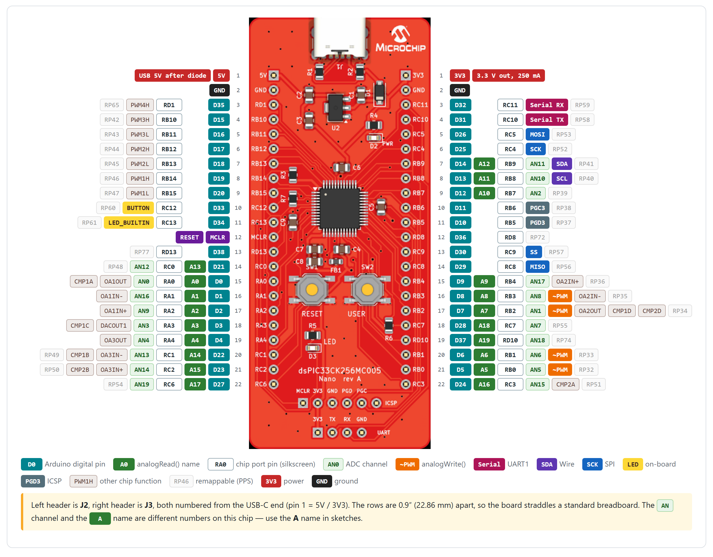

Lab manuals for the open-hardware dsPIC33CK256MC005 breadboard board with an Arduino-compatible core: 38 labs in English and Thai.
The special hardware of the dsPIC33CK256MC005: comparator, PPS, PTG, CRC, Deadman Timer, DSP math, six-channel PWM and the full 12-bit ADC.
Basics, Advanced and Application: from Blink, Serial and ADC to DMA, RTOS, CAN, LIN, a line-follower robot and PID temperature control.
| Lab | Topic | What you build |
|---|---|---|
| Lab 31 | Analog comparator | CMP1 + DAC threshold, hysteresis, edge counter, a SAR ADC built from DAC + comparator |
| Lab 32 | Peripheral Pin Select | Move a PWM and an interrupt input between pins at run time, virtual pins, IOLOCK |
| Lab 33 | Peripheral Trigger Generator | A step program that blinks the LED, reacts to the button and makes 1 kHz with zero CPU time |
| Lab 34 | CRC engine | CRC-8/16/32 self-test, speed against software, Modbus frame check, flash fingerprint |
| Lab 35 | Deadman Timer | Instruction-count watchdog with a window: too late, too early and wrong key are caught |
| Lab 36 | DSP math | Q15, 40-bit accumulators, MAC, FIR benchmark, RMS, Goertzel DTMF decoder |
| Lab 37 | Six-channel PWM | 6 independent channels at 2.5 ns plus dithering, 6-phase interleave, breathing LEDs |
| Lab 38 | Advanced 12-bit ADC | All 22 channels, 6-12 bit, timer/PWM triggers, compare window, oversampling, AVDD from the band gap |

Arduino IDE: add this URL under File → Preferences → Additional boards manager URLs, then install dsPIC33CK Nano in the Boards Manager:
https://raw.githubusercontent.com/microchipthailand/dspic33ck-nano/main/package_dspicnano_index.json
Source code, PCB files, the MPLAB X bootloader host and setup details are on GitHub.